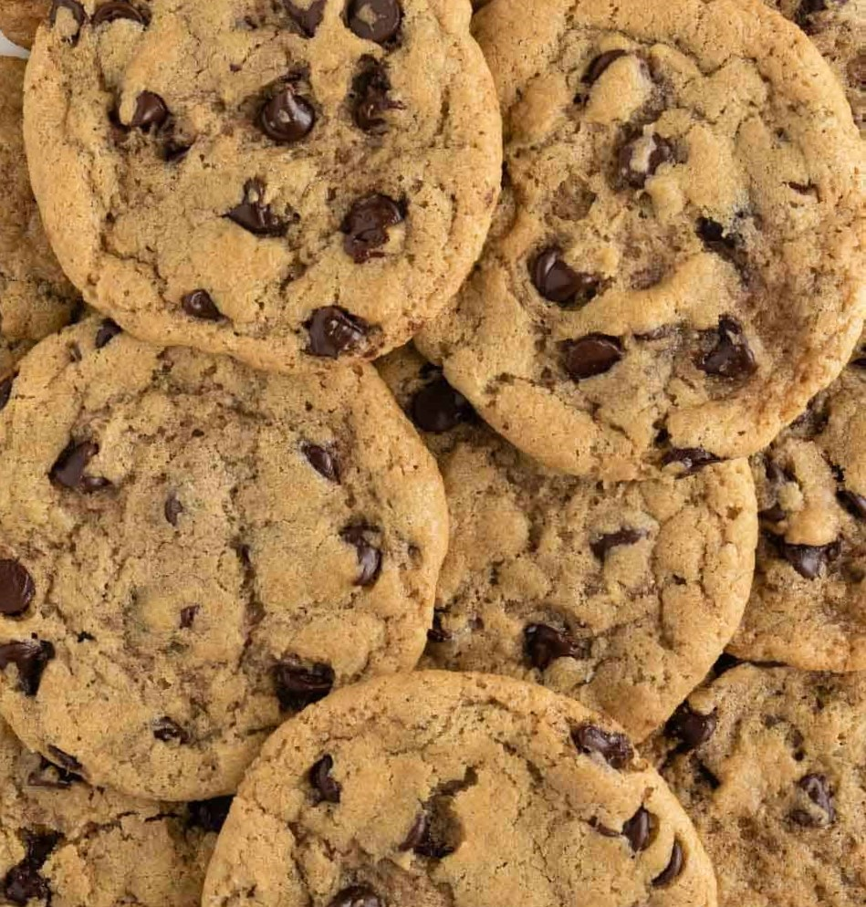

Introduction
Today I will be making chocolate chip cookies, I love making these chocolate chip cookies since they are crispy on the outside and chewy on the inside.
My cookies have a lot of vanilla which is what I believe makes them great!

Ingredients
- 135 grams of unsalted butter
- 300 grams of light brown sugar
- 1 egg
- 5 grams of vanilla extract
- 1 gram of baking powder
- 3 grams of baking soda
- 1 gram of salt
- ⅕ of a kilogram of flour
- 50 grams of skim milk powder
- 65 grams of milk chocolate chips
- 65 grams of dark chocolate chips
Instructions
- Bring all of the ingredients to room temperature.
- Once your ingredients are at room temperature preheat the oven to 340°F or 170°C.
- With the paddle attachment on an electric stand mixer, mix the butter, brown sugar, salt and vanilla starting at a slow speed and gradually raising
to a medium speed until it becomes a pale and fluffy mix.
- Add in the eggs and mix well until everying is encorporated and using a spatula to scrape down the edges of the bowl to make sure all
the ingredients are mixed.
- Once the batter is well combind add in the flour, baking powder, baking soda, skim milk powder and chocolate chips on the lowest setting just
until all of the ingredients are incorporated it is very important to not overmix the dough!
- Put the cookie dough into the fridge for 15 minutes while lining one or two baking sheets depending on the size of the oven.
- Roll the dough into balls and place them onto the baking sheet, lightly flattening them with the bottom of a cup, another flat surface
or your fingers.
- Place the baking sheet(s) into the oven for 6 to 9 minutes if you have a smaller cookie and if they are bigger bake them until the edges are lightly brown
or until a toothpick comes out clean
- Once the cookies are out of the over transfer them to a cooling rack or a plate to cool and start rolling new cookies. Repeat this until there is no
more dough.